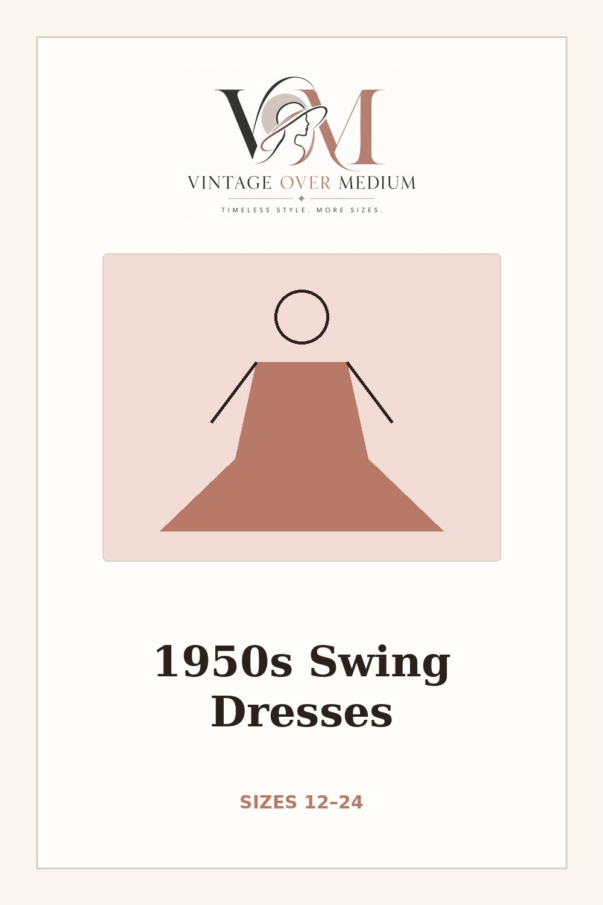
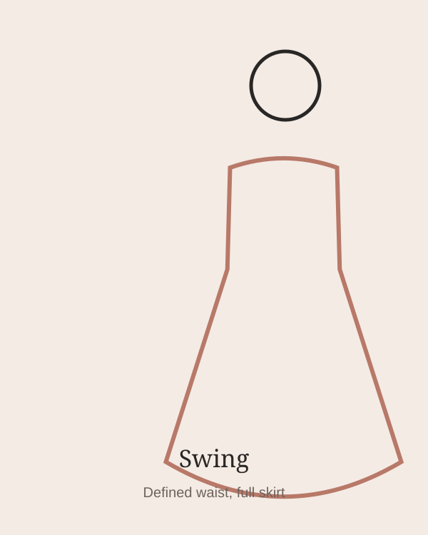
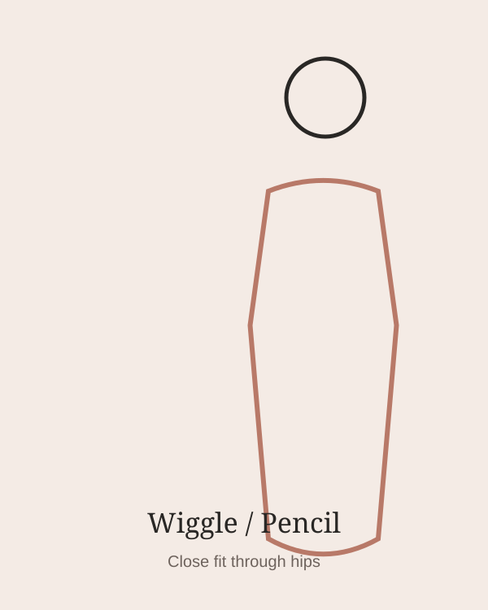
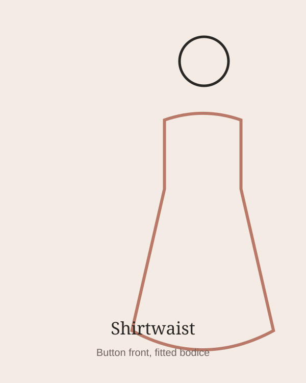

1950s Swing Dresses for Midsize & Plus Women
The 1950s swing dress might be the most flattering thing ever designed for a curvy body: fitted at the waist, full through the hips, and it twirls. Here are the ones that actually come in our sizes.

Across these picks: 12–24 / M–4X
Fit tip: Check the bust first on fitted bodices, then the waist.
What Makes a Swing Dress
A fitted bodice and defined waist open into a full skirt — usually a circle or gathered shape — so the fabric skims the hips instead of gripping them.

Swing
Defined waist, full skirt.

Wiggle
Close fit through hips.

Shirtwaist
Button front, fitted bodice.
Polka Dot Swing Dresses
The print that does the most 1950s work with the least effort.
See our current picks on Pinterest →
Floral Swing Dresses
Soft florals for tea-dress energy without the tiny vintage sizing.
See our current picks on Pinterest →
Gingham & Plaid
Picnic checks, tartans, and structured cottons with room to move.
See our current picks on Pinterest →
Solid Colors — Red, Black, Navy, Teal
Simple colors put the silhouette front and center.
See our current picks on Pinterest →
Swing Dresses With Pockets
Because if a full skirt can hide pockets, it should.
See our current picks on Pinterest →
Complete the Look
The finishing pieces that make it look intentional.
See our current picks on Pinterest →
How to Get the Right Fit in a Swing Dress
Get the Size Cheat Sheet
The one-page guide to shopping retro sizes above a 12, plus new finds when they drop.
No spam. Unsubscribe anytime.